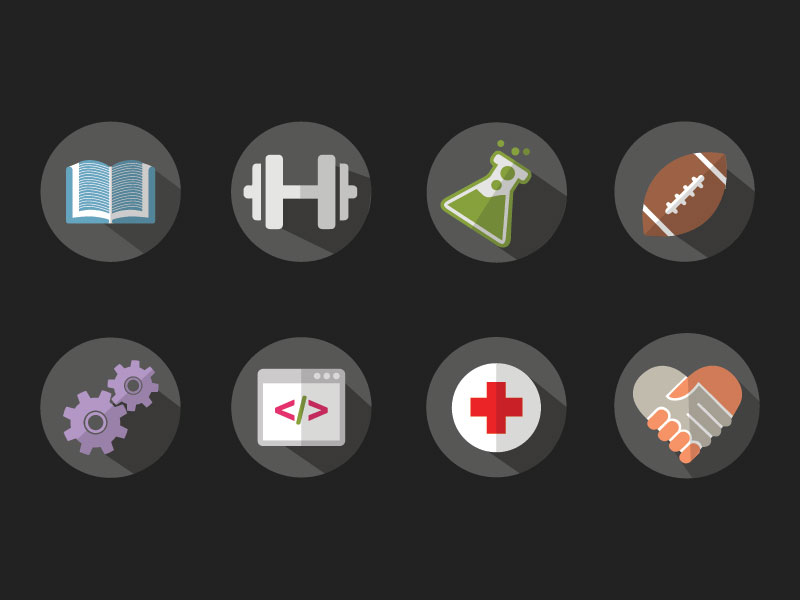

Back
Angular Material Icons
I created these Angular Material inspired icons and posted them to my
Dribble
account as a freebie. They ended up being featured in multiple design articles such as:
Design Modo
,
Designer Share
, and
Dev Zum
to name a few.
Download
